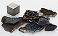

manganese

Definition: Manganese is a chemical element with the symbol Mn and atomic number 25. It is a hard, brittle, silvery metal, often found in minerals in combination with iron. Manganese is a transition metal with a multifaceted array of industrial alloy uses, particularly in stainless steels. It improves strength, workability, and resistance to wear. Manganese oxide is used as an oxidising agent; as a rubber additive; and in glass making, fertilisers, and ceramics. Manganese sulfate can be used as a fungicide.
Source: Wikipedia
Wikipedia Page
Wikidata Page